Ogni contributo verifica fonti primarie e indica cosa cambia per il destinatario. Mai marketing, mai pareri travestiti.
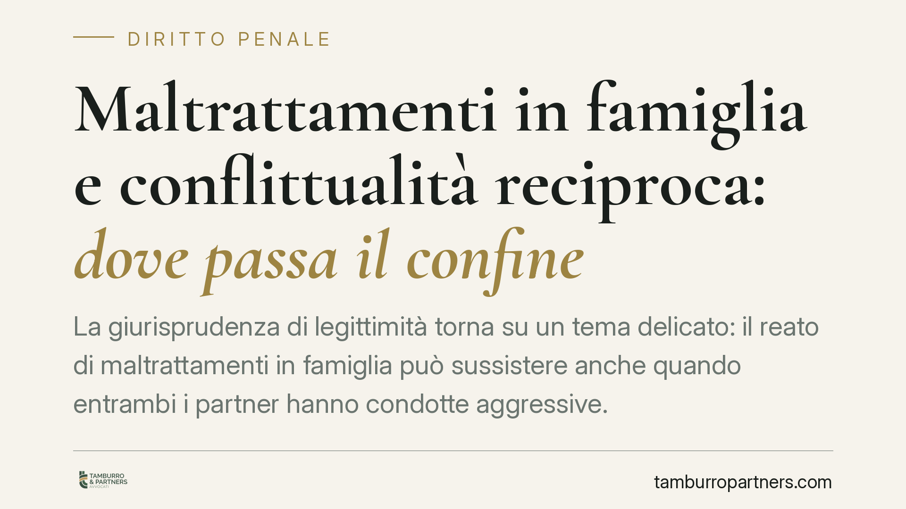
La giurisprudenza di legittimità torna su un tema delicato: il reato di maltrattamenti in famiglia può sussistere anche quando entrambi i partner hanno condotte aggressive. Ciò che…
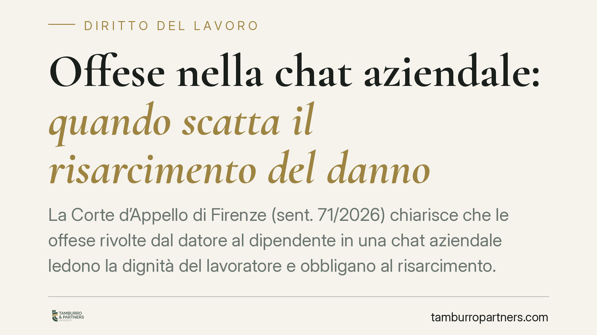
La Corte d'Appello di Firenze (sent. 71/2026) chiarisce che le offese rivolte dal datore al dipendente in una chat aziendale ledono la dignità del lavoratore e obbligano al risarci…
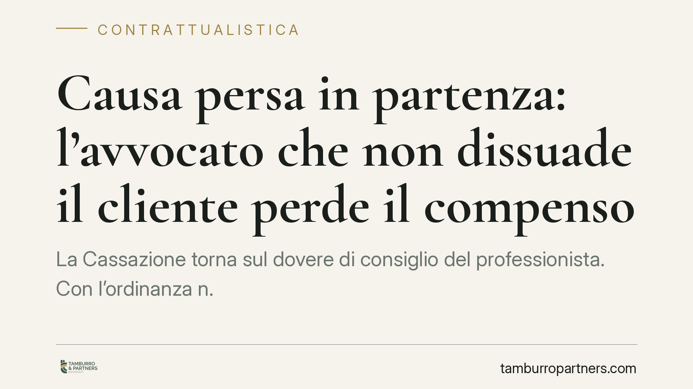
La Cassazione torna sul dovere di consiglio del professionista. Con l'ordinanza n. 5673/2026 chiarisce che l'avvocato che non dissuade il cliente da una causa priva di speranza di …
Chi percepisce la pensione anticipata con Quota 100 e svolge attività lavorativa può incorrere nel divieto di cumulo con redditi da lavoro. Un recente indirizzo di legittimità chia…
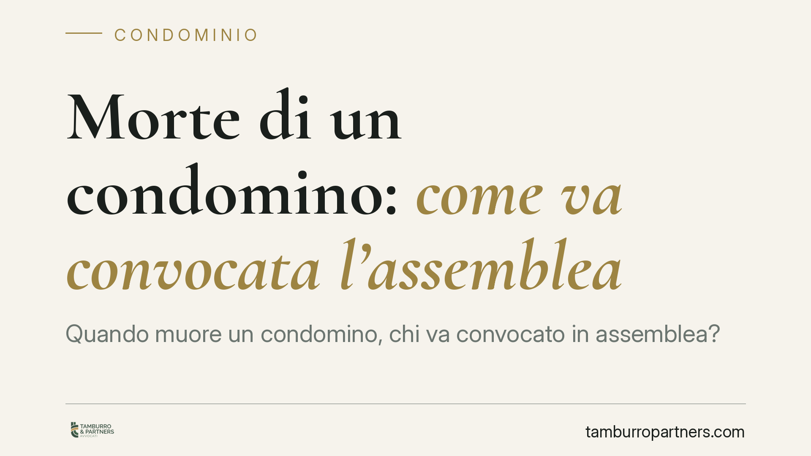
Quando muore un condomino, chi va convocato in assemblea? La giurisprudenza chiarisce che l'amministratore non ha l'onere di rintracciare gli eredi, ma deve convocarli nominativame…
Le inchieste sui laboratori che riforniscono grandi marchi del lusso hanno riportato al centro una domanda precisa: chi risponde per lo sfruttamento del lavoro lungo la filiera? La…
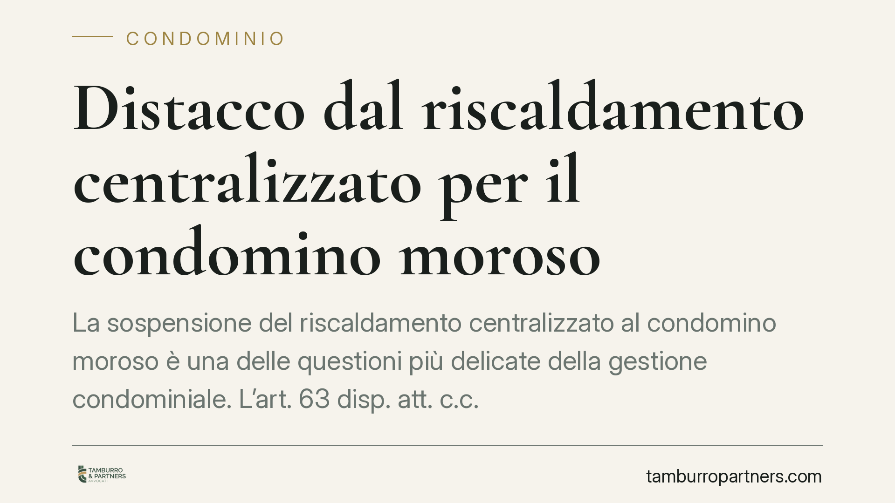
La sospensione del riscaldamento centralizzato al condomino moroso è una delle questioni più delicate della gestione condominiale. L'art. 63 disp. att. c.c. consente la sospensione…
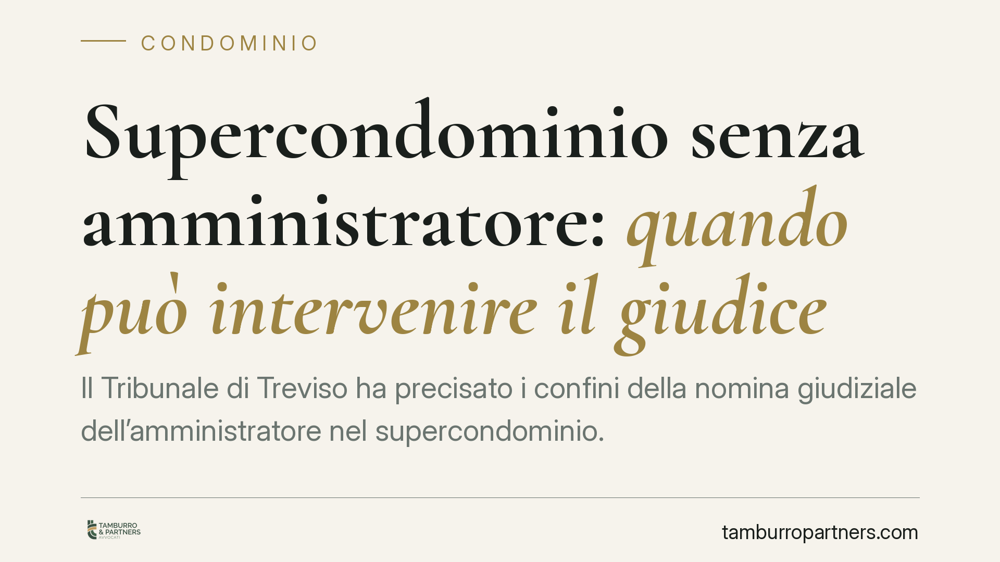
Il Tribunale di Treviso ha precisato i confini della nomina giudiziale dell'amministratore nel supercondominio. L'obbligo di nomina scatta solo oltre gli otto edifici; sotto tale s…
La formula "entro e non oltre" è diffusissima nei contratti, ma da sola non basta a rendere un termine essenziale ai sensi dell'art. 1457 c.c. Secondo una pronuncia della Cassazion…
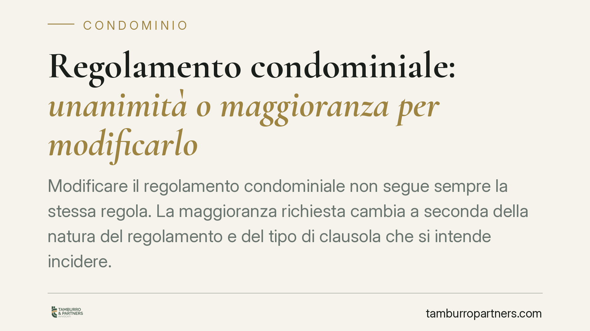
Modificare il regolamento condominiale non segue sempre la stessa regola. La maggioranza richiesta cambia a seconda della natura del regolamento e del tipo di clausola che si inten…
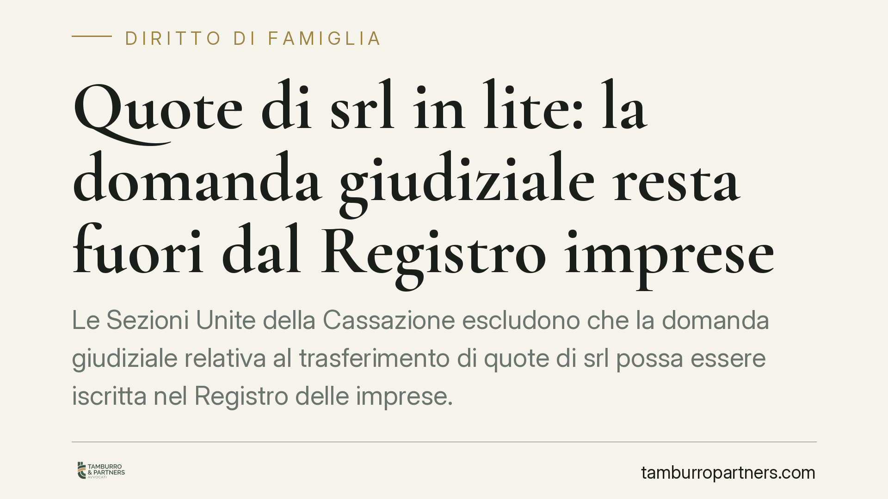
Le Sezioni Unite della Cassazione escludono che la domanda giudiziale relativa al trasferimento di quote di srl possa essere iscritta nel Registro delle imprese. La ragione è il pr…
L'infedeltà coniugale, anche se provata, non comporta automaticamente l'addebito della separazione. Un orientamento consolidato della giurisprudenza richiede un elemento ulteriore:…
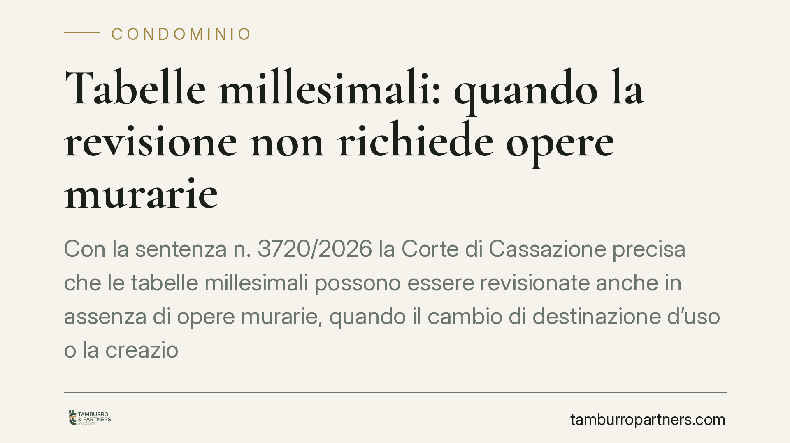
Con la sentenza n. 3720/2026 la Corte di Cassazione precisa che le tabelle millesimali possono essere revisionate anche in assenza di opere murarie, quando il cambio di destinazion…
Quando le infiltrazioni da un lastrico solare provocano patologie certificate, il diritto alla salute può prevalere sui tempi ordinari della giustizia. Una recente ordinanza di mer…
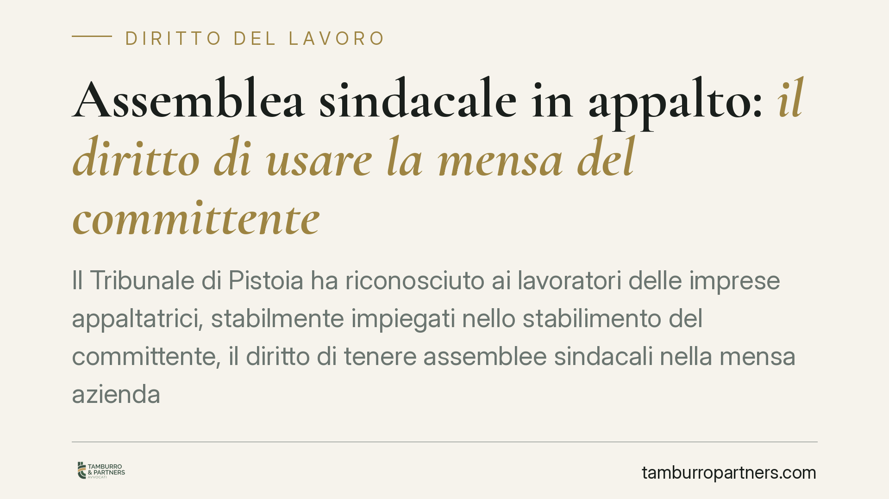
Il Tribunale di Pistoia ha riconosciuto ai lavoratori delle imprese appaltatrici, stabilmente impiegati nello stabilimento del committente, il diritto di tenere assemblee sindacali…
Quando l'azienda fallisce, il Fondo di garanzia dell'INPS interviene per pagare TFR e ultime mensilità. La Sezione Lavoro della Cassazione conferma un principio rilevante: se il cr…
Un messaggio vocale su WhatsApp non basta a licenziare: secondo il Tribunale di Grosseto il recesso comunicato con audio è inesistente perché privo della forma scritta imposta dall…
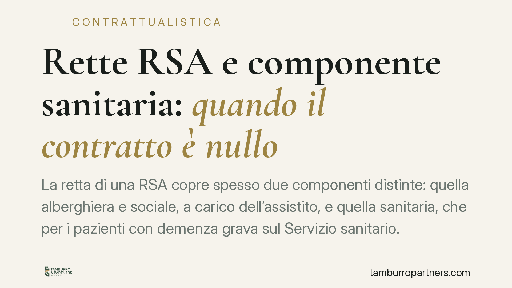
La retta di una RSA copre spesso due componenti distinte: quella alberghiera e sociale, a carico dell'assistito, e quella sanitaria, che per i pazienti con demenza grava sul Serviz…
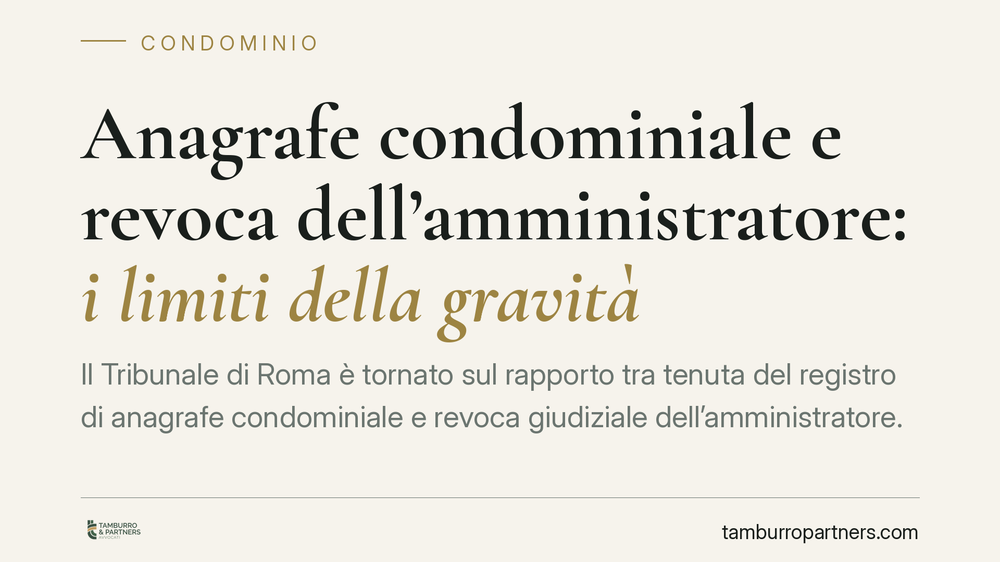
Il Tribunale di Roma è tornato sul rapporto tra tenuta del registro di anagrafe condominiale e revoca giudiziale dell'amministratore. Il principio è netto: non ogni irregolarità fo…
L'assenza dell'amministratore non apre automaticamente la strada al tribunale. In una recente pronuncia di merito si chiarisce che la nomina giudiziale nel supercondominio presuppo…
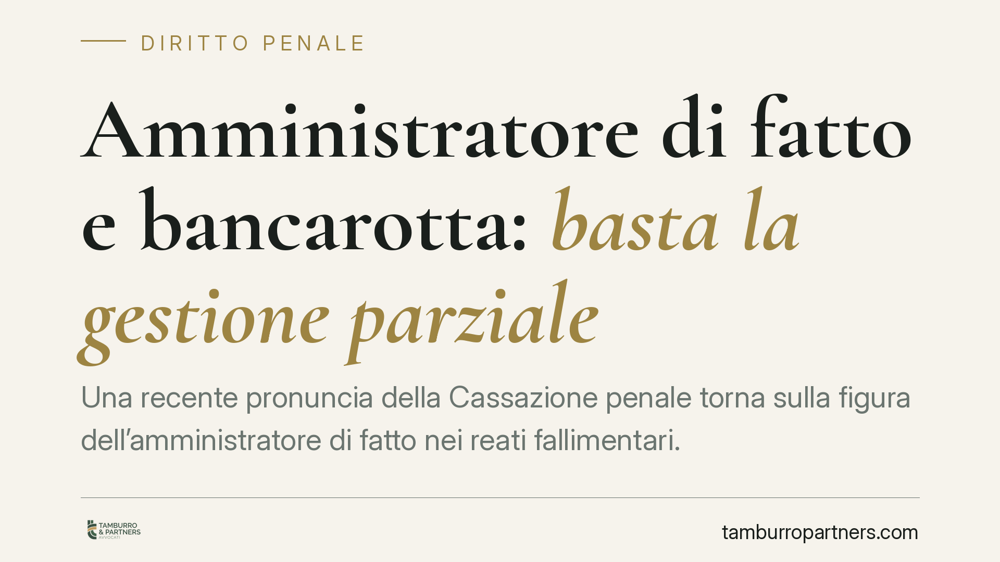
Una recente pronuncia della Cassazione penale torna sulla figura dell'amministratore di fatto nei reati fallimentari. L'orientamento valorizza il dato sostanziale: per la qualifica…
Una lavoratrice reagisce fisicamente a un collega, ex compagno, dal comportamento molesto. Il datore la licenzia per giusta causa; i giudici dichiarano il recesso illegittimo per d…
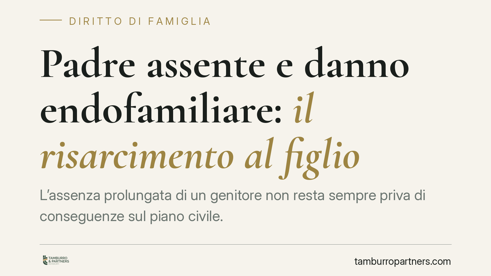
L'assenza prolungata di un genitore non resta sempre priva di conseguenze sul piano civile. La giurisprudenza riconosce da tempo il cosiddetto danno endofamiliare: la lesione del d…
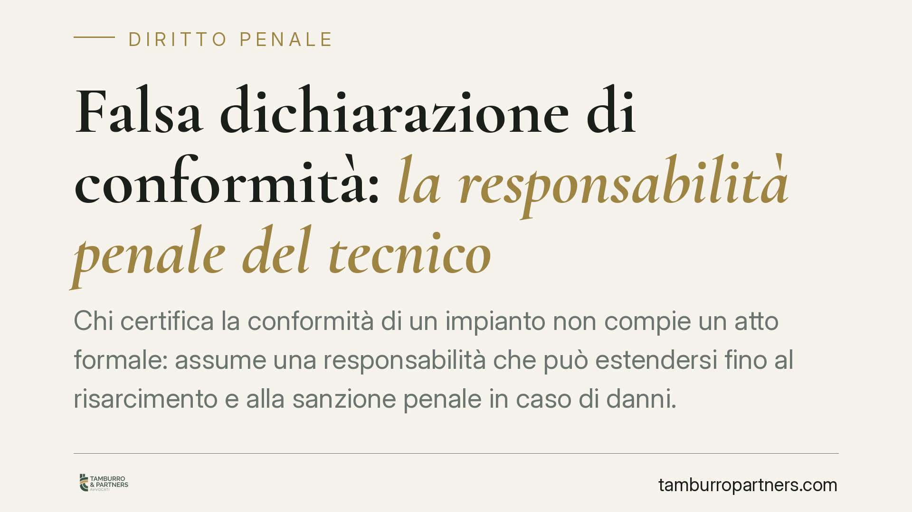
Chi certifica la conformità di un impianto non compie un atto formale: assume una responsabilità che può estendersi fino al risarcimento e alla sanzione penale in caso di danni. La…
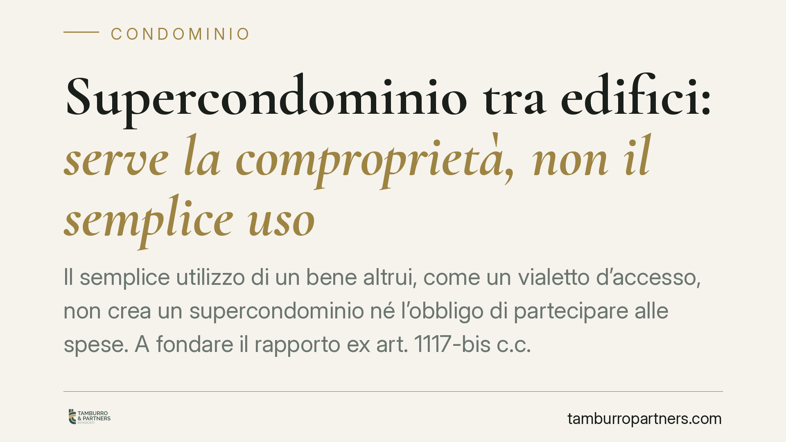
Il semplice utilizzo di un bene altrui, come un vialetto d'accesso, non crea un supercondominio né l'obbligo di partecipare alle spese. A fondare il rapporto ex art. 1117-bis c.c. …
Il giudice minorile può disporre il collocamento in comunità del minore indagato anche senza passare prima per le misure meno afflittive, quando motiva l'inadeguatezza della famigl…
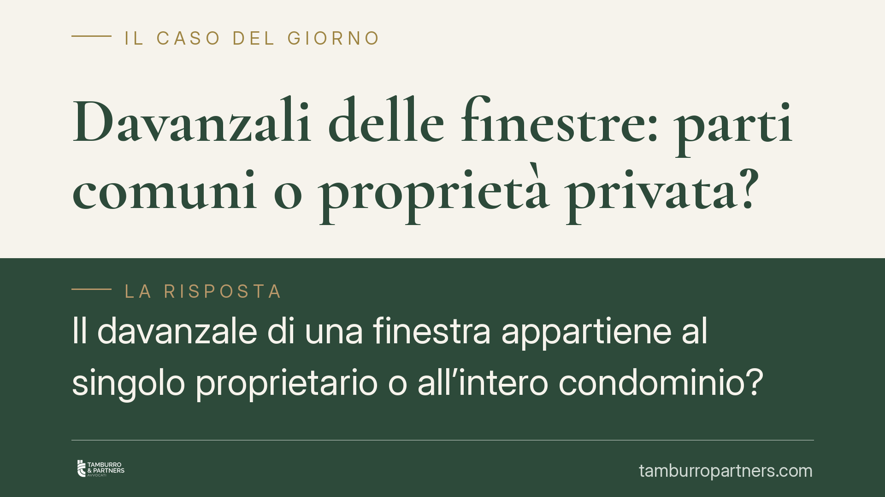
Il davanzale di una finestra appartiene al singolo proprietario o all'intero condominio? Una recente pronuncia di merito valorizza il criterio funzionale: quando l'elemento serve s…
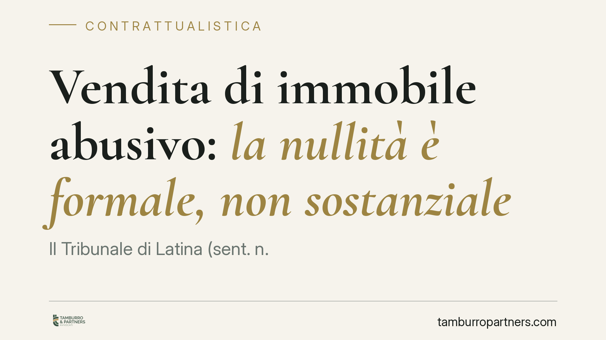
Il Tribunale di Latina (sent. n. 323/2026) torna su un nodo pratico della contrattualistica immobiliare: la nullità della compravendita non nasce dall'abuso edilizio in sé, ma dall…
Il tema del destino del TFR verso la previdenza complementare torna d'attualità per via di ipotesi di riforma in discussione. Prima di parlarne come di diritto vigente, conviene di…
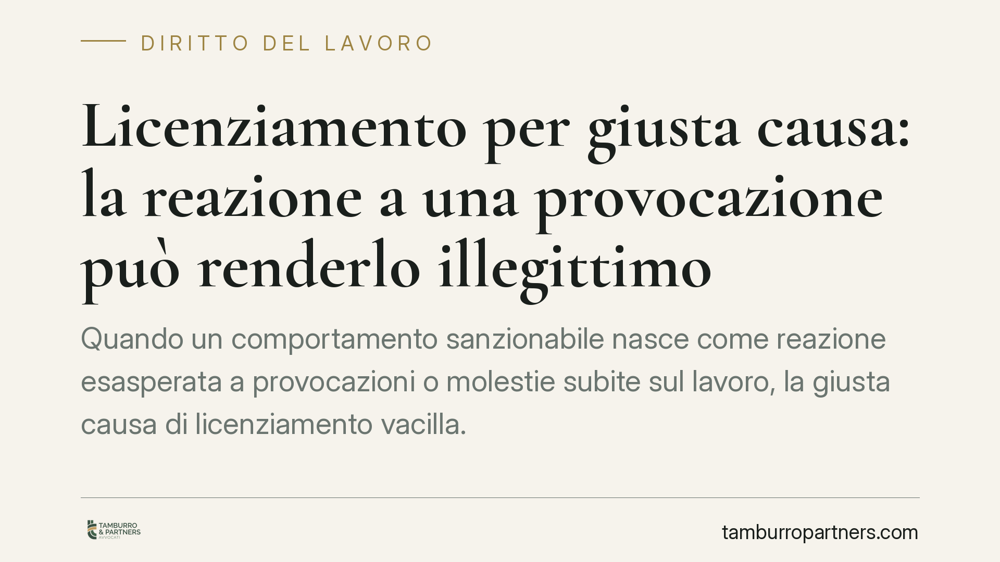
Quando un comportamento sanzionabile nasce come reazione esasperata a provocazioni o molestie subite sul lavoro, la giusta causa di licenziamento vacilla. La giurisprudenza di legi…